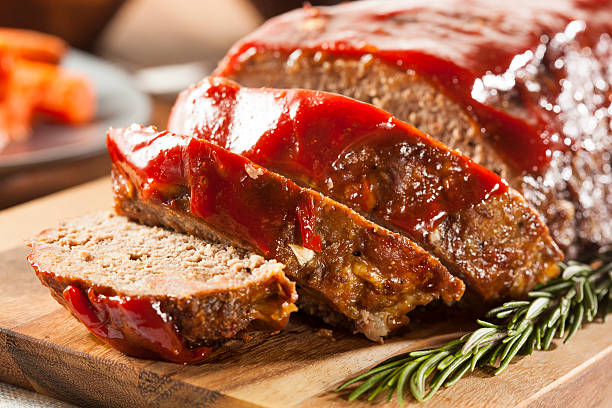

Meatloaf is an American dish made by mixing grounded meat such as beef with spice. It generally is combined with onions, garlic, breadcrumbs, and eggs.
Baking times for meatloafs will vary based on size of the baking pan you use. You want the internal temperature of the meat to be 160 degrees F, this recipe usually calls for around 60-75 minutes for baking time.
Home Page